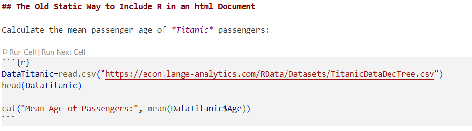
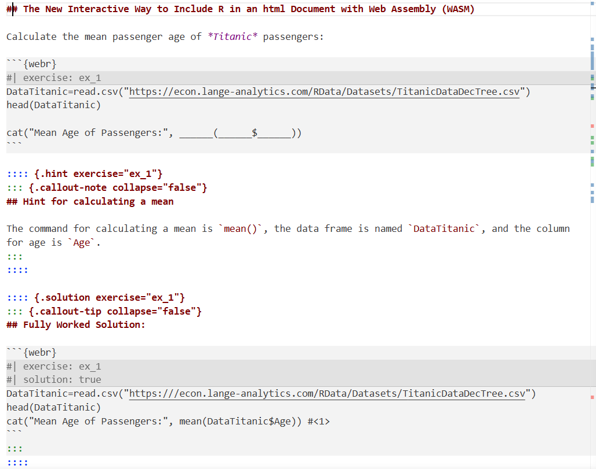
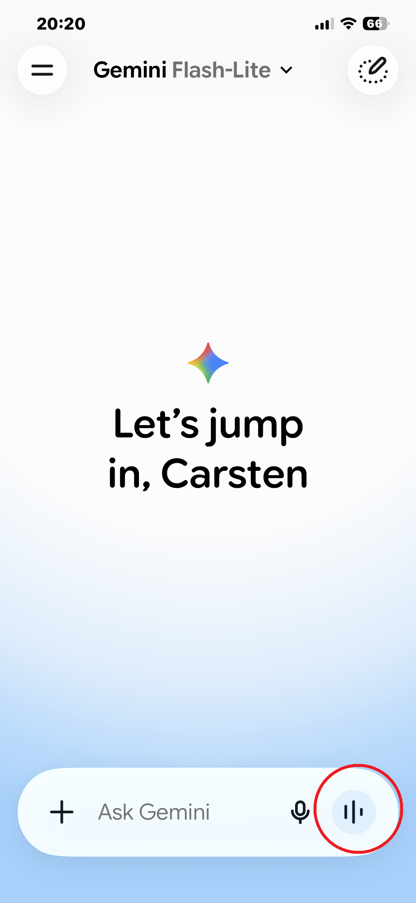
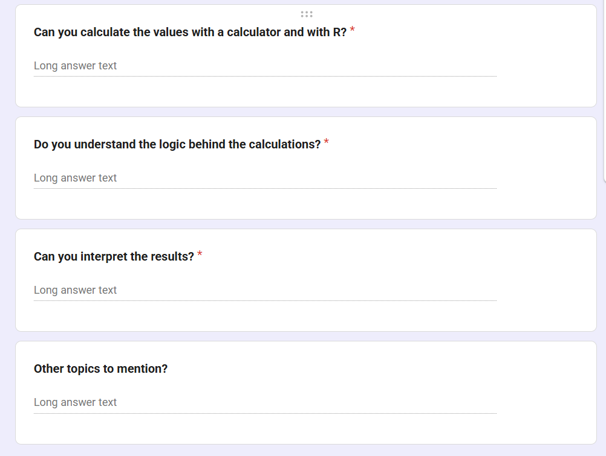

Use Cases for Interactive and Immersive Teaching (tinyurl.com/langehawkes2026)
Fall 2026 Innovative Educators Summit
2026-10-22
R and Python: Interactivity in a Browser Using Quarto from Posit
Demo: Virtual Reality for 3D Regressions
genAI use in Education
R is a freely available Statistics Software
Most commonly R is installed together with an IDE (i.e., advanced editor) on a faculty or student’s PC
Calculate the mean passenger age of Titanic passengers:
Survived Pclass Sex Age SiblingsSpousesAboard ParentsChildrenAboard
1 0 3 male 22 1 0
2 1 1 female 38 1 0
3 1 3 female 26 0 0
4 1 1 female 35 1 0
5 0 3 male 35 0 0
6 0 3 male 27 0 0Mean Age of Passengers: 29.47144
Calculate the mean passenger age of Titanic passengers:
Hint for calculating a mean
The command for calculating a mean is mean(), the data frame is named DataTitanic, and the column for age is Age.
Fully Worked Solution:
DataTitanic=read.csv("https:///econ.lange-analytics.com/RData/Datasets/TitanicDataDecTree.csv")
head(DataTitanic)
cat("Mean Age of Passengers:", mean(DataTitanic$Age)) #<1>
DataTitanic=read.csv("https:///econ.lange-analytics.com/RData/Datasets/TitanicDataDecTree.csv")
head(DataTitanic)
1cat("Mean Age of Passengers:", mean(DataTitanic$Age))mean() calculates the mean age from the column DataTitanic$Age

Various Data are displayed
Data and Regression planes can be changed and adjusted
genAI to Support Teachingbooks, videos, and even Google searches are one way learning tools:
Providing information but no conversations
genAI, when used correctly can support a real conversation like between a student and their tutor
genAI Learning (Teach me about Mean and Median)
Note: The Gemini phone app was used entirely audio-based (2:30).
genAI Learning (Teach me about Mean and Median)genAI Learning (teach me about Mean and Median)genAI Learning (Teach me about Mean and Median)genAI Learning (teach me about Mean and Median)genAI Learning (Teach me about Mean and Median)genAI Learning (teach me about Mean and Median)genAI Learning (Teach me about Mean and Median)genAI Learning (teach me about Mean and Median)genAI Learning (Teach me about Mean and Median)genAI Learning (teach me about Mean and Median)genAI Learning
genAI will not substitute instructors!
genAI will allow us to focus on higher skills, something we always wanted!
genAI Learning (Teach Me How to …)Use Flipped Classroom (this is an old concept) where genAI, textbooks, and videos teach the basics and the instructor focusses on higher skills in the classroom
In class Google Forms is used to get student feedback for each learning outcome:

| x |
|---|
| I can calculate quartiles but I struggle with the percentiles. |
| Yes, I can |
| Yes. R is a little easier. |
| Yes, very easy |
| Neither |
| yes but especially with the calculator I make mistakes. R is easy |
| Yes |
| yes |
| With R no problem, by hand it is complicated because there are many rules to follow when it comes to rounding |
| yes |
| Not at all |
| x |
|---|
| Not really |
| yes |
| Not really |
| absolutly |
| not at all |
| Mostly |
| quartiles I understand |
| yes |
| Yes, but not the rounding |
| yes |
| no idea |
| x |
|---|
| Yes |
| yes |
| Quartiles yes but percentiles I struggle |
| yes |
| no |
| Yes |
| Somehow. |
| no |
| yes |
| The interpretation is not intuitive to me |
| no idea |
| x |
|---|
| Can we review percentiles. |
| I like how powerful the concept of percentiles is |
| Can we review percentiles again especially the rounding rules |
| move faster in the class |
| Statistics sucks |
| Are these concepts relevant in real life? |
I created a Gemini Notebook and connected it to the Google Form (login: econcarsten@gmail.com)
Now I can ask questions about the evaluation.
Course Assistants
Click for an example (you need a Google account)
1.Access the Platform: Requires a Google Account. Navigate to https://notebooklm.google.com in your browser. If prompted, log in using your standard Google credentials.
Create a New Notebook: On the main dashboard, click the large card that says New Notebook (or the + icon). This opens up a completely fresh, empty workspace.
Upload Your PDFs: Max 200 MB per file. An Add sources window will automatically pop up. Select Upload files (or drag and drop)
Add Your Context Note: Once the PDFs finish loading, click the + (Add source) button in the left panel again, select Note, and paste your routing instructions (telling it when to read Syllabus file versus the Textbook file).
The slides are available at: https://tinyurl.com/langehawkes2026